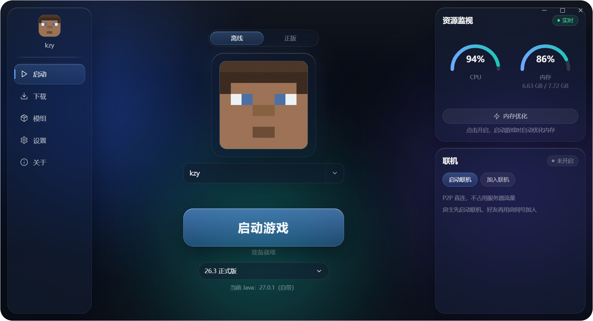

便携运行，自带 Java
解压即用，内置 Java 27 运行时。首次启动自动创建游戏目录、配置与日志，不写注册表。
Windows x64 · 便携免安装
内置 Java 运行时，下载、补全、启动一步到位；支持 Fabric 在线安装、在线模组搜索与更新， 以及不消耗服务器流量的 P2P 联机。

围绕“装得上、跑得动、联得到”设计，不堆无用开关。
解压即用，内置 Java 27 运行时。首次启动自动创建游戏目录、配置与日志，不写注册表。
官方源与两条备用通道可选，支持断点续传、SHA1 校验与实时下载速度显示。
选择原版与 Loader 版本即可生成继承版本，与原版共用 jar 与资源，不重复占用磁盘。
搜索 Modrinth 直接安装，自动匹配当前版本与 Fabric；缺失前置一键补齐，并支持更新检测。
房主填写并监测局域网端口，好友用 6 位房间号加入；游戏流量走点对点直连，不占服务器带宽。
实时显示 CPU 与内存占用；启动前整理系统工作集，减少后台占用，全程不请求提权。
当前版本 v1.2.3，更换全新启动器图标，建议更新。
安装包约 420 KB，运行后从 Gitee 下载约 173 MB 的程序文件，安装向导会显示下载进度和速度，自动创建桌面与开始菜单快捷方式。也可以手动下载两个分卷，解压到同一目录。SHA256 part1：68a48713f641530b8ee25d9e882796d491f698b23b1a9ef31ca051e5e23c5a00；part2：f0bf00cbf69ae3e1c2c928e2993a546167ca1089f1c84eb14c79deadc2382ce2
WOO-MC-Launcher-1.2.3-Setup.exe，按向导选择安装目录（默认安装到当前用户目录，不需要管理员权限）。只记录用户可感知的变化。
遇到问题先看这里，仍有疑问可在 GitHub 提 Issue。
不需要。发行包内含 Java 27 运行时；也可以在设置中手动选择本地 Java。
模组需要 Fabric 加载器。请先在下载页安装 Fabric 版本，再启动该 Fabric 版本；原版版本不会加载模组。
在模组详情里点“一键安装缺失依赖”，会从 Modrinth 自动匹配兼容版本并安装前置；部分模组已内置前置，不会再误报。
游戏流量走 P2P 直连，不需要中继服务器；服务器只保存房间号与网络参数，用于双方配对。
可在下载页切换下载源。备用通道适合官方源不稳定时使用，依赖库与资源仍从官方地址获取。
目前只提供 Windows x64 版本。